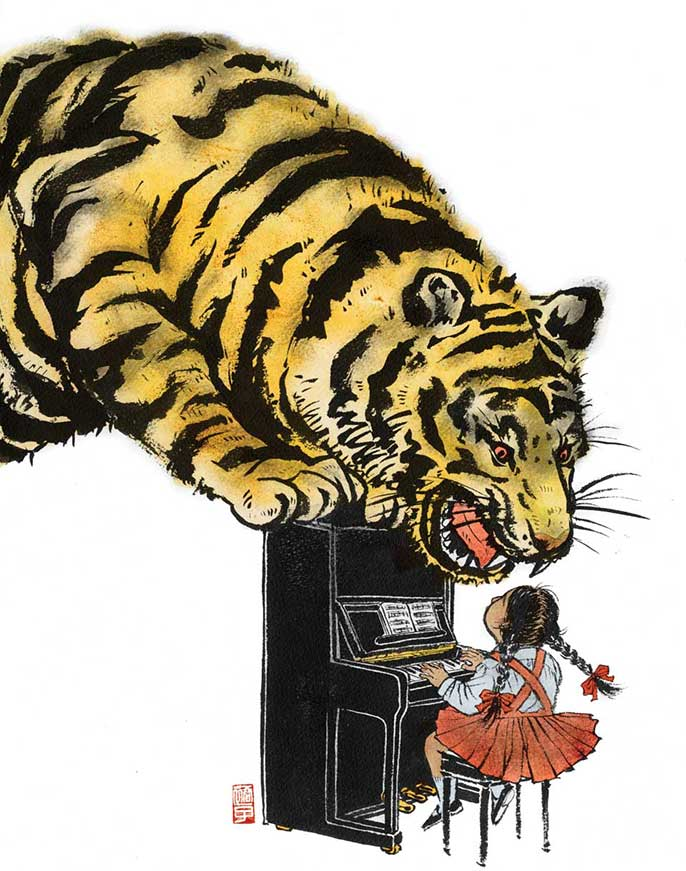

CARTOON DEPICTION OF ANGRY TIGER AT GIRL PLAYING MUSIC
Source: University of California
The mention of the stereotype “Tiger mom” may bring about fear in some Asian Americans. According to the University of California, a mother is classified as a “Tiger Mom” when she is “controlling, [demanding of discipline], and less supportive” of her children, and that this style can result in the children’s low self-esteem and contribute to mental health problems such as depression and problem behaviors (University of California, 2014).
The reasons that a “Tiger Mom” may take on this style of authoritarian parenting is because they were exposed to that same parenting style when they were their children’s age in their country of origin (e.g., India, China, Japan, etc.). This parenting style had worked for them and allowed them to become better and more intelligent individuals. However, after immigrating to the United States, their children compared experiences after receiving their American friends’ mothers kindness and their own mother’s scolding. This may account for the resulting difference in first generation and second generations Asian immigrants.